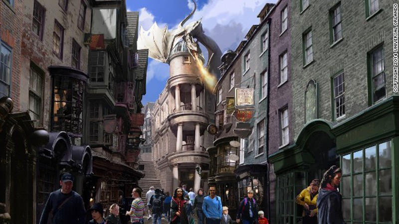

Criado em 1997, os livros da autora J. K. Rowling se espalharam pelo mundo todo.
Mediante a todo esse sucesso o universo bruxo se expandiu cada vez mais, dando iniciativa para a criação de outras mídias
como os Filmes, a série de Animais Fantásticos e diversas Fãfics que ganharam um sucesso extremo, como o próprio livro Harry Potter e a Criança Amaldiçoada.
(Clique nas imagens para saber mais).
- Harry Potter
- Animais Fantásticos
- Fãfics
Personagens
Durante os 10 anos dos Livros, vários personagens únicos foram escritos, detalhados e admirados pelo público.
Alguns destes possuindo um grande destaque durante toda a trajetória do Protagonista, como o trio principal, composto por Harry, Hermione e Ronnye,
os professores de Hogwarts, como Albus Dumbledore, Snape Severo e Minerva Mcgonagaal, além disso, vários vilões como Lord Valdemort, Bellatrix Lestrange e Lúcio Malfoy possuem um carinho enorme dos fãs.
Hogwarts
Hogwarts é mais do que uma simples escola de magia; é um lugar carregado de história, mistério e encantos.
Fundada há mais de mil anos por quatro bruxos lendários — Godric Gryffindor, Helga Hufflepuff, Rowena Ravenclaw
e Salazar Slytherin —, a escola se tornou um ícone no mundo bruxo, acolhendo jovens bruxos e bruxas de todas as
partes do Reino Unido.
Situada em um castelo imponente, cercado por florestas misteriosas e lagos encantados, Hogwarts é um lugar
onde a magia é viva e pulsante, presente em cada sala, corredor e jardim. A estrutura do castelo é repleta
de segredos, com passagens secretas, quadros falantes e salas que mudam de lugar. Cada um dos quatro prédios
da escola — Gryffindor, Hufflepuff, Ravenclaw e Slytherin — representa não apenas uma casa, mas um ideal que
reflete os valores de seus fundadores: coragem, lealdade, sabedoria e ambição. (Clique na imagem para saber mais).
Mídias
O universo de Harry Potter é vasto e envolve diversos tipos de mídias, que vão além dos livros e filmes. Aqui estão algumas das principais formas de mídia relacionadas à franquia:
- Jogos:
Existem muitos jogos baseados no universo de Harry Potter, como Harry Potter: Hogwarts Mystery e Harry Potter: Wizards Unite (o último foi descontinuado).
Hogwarts Legacy (2023): Um jogo de RPG ambientado no século XIX, onde o jogador pode viver a experiência de ser um estudante em Hogwarts, muito antes de Harry nascer.

- Produtos e Merchandising:
A franquia possui uma enorme quantidade de produtos, desde brinquedos e roupas até colecionáveis e edições especiais dos livros e filmes.
Parques temáticos: A Warner Bros. criou parques temáticos de Harry Potter, como o "The Wizarding World of Harry Potter", que está localizado em Universal Studios na Flórida, Califórnia, e Japão.

- Mídia Digital e Sites:
Pottermore (atualmente rebatizado como Wizarding World): Um site oficial onde os fãs podem explorar mais sobre o universo de Harry Potter, fazer testes de casa de Hogwarts, obter informações adicionais sobre os personagens e até comprar produtos relacionados à franquia.
Existem ainda muitos outros aspectos de mídia, como fanfics, podcasts e fanart, que expandem constantemente o universo de Harry Potter.